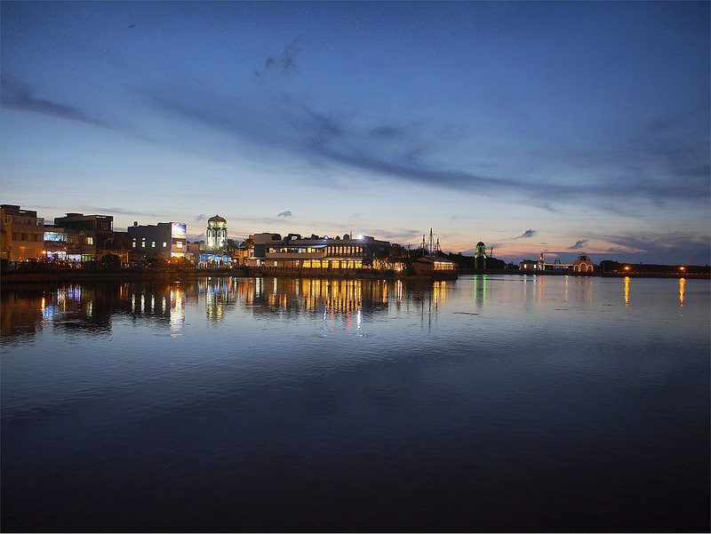

新竹南寮漁港
Hsinchu Nanliao Harbor
地址：新竹市北區南寮街
南寮漁港位在新竹巿西北郊，離新竹市區不遠，因此交通十分便利；南寮漁港於民國38年啟用完工，在擴建後無論是漁船的數量、噸位或是漁獲量都可說是桃、竹、苗地區屬一屬二的漁港；南寮舊港及其周邊聚落為新竹市早期發展地區之一，見證了新竹市的歷史發展過程，具有重要的歷史文化價值，南寮漁港更是南北漁船返航路之終點，過去亦是各地魚貨漁船的集散地，因而名列十二勝，並有『南寮歸帆』雅稱。
南寮漁港外圍有一道綿長如帶的防波堤，堤面彩繪海洋生態，是南寮漁港的標誌；漫步在堤上欣賞海落日，吹吹海風，十分愜意；現在的南寮漁港有點像小一號的淡水漁人碼頭，目前成了私家漁船的停泊點，有夜釣或是釣小管的行程；另外，在新竹市政府的規劃下，沿海十七公里海岸風景區，加上漁人碼頭、漁村文化博物館、環港步道等旅遊景點設施，活化及保存舊港的文化資產，進而結合新竹漁港的觀光發展潛力，讓南寮漁港地區成為民眾假日出遊的絕佳去處。
更多介紹：